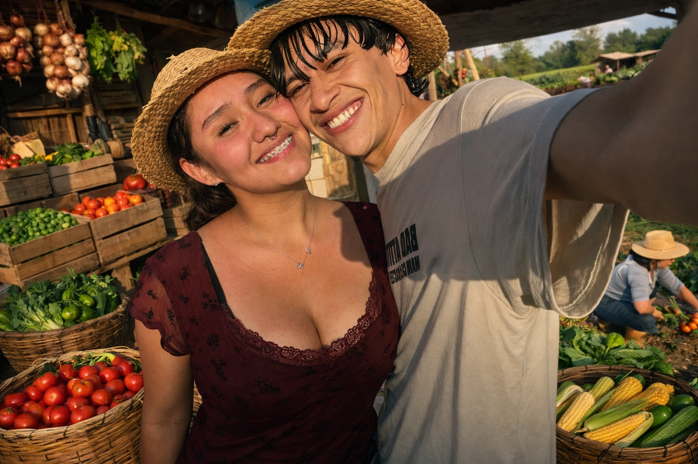

Verdulería Ferras no nació de un plan de negocios frío o de una herencia familiar; nació de una mirada entre los puestos de un mercado local y una promesa bajo el sol de la tarde. Nuestra Historia Todo comenzó cuando el destino (y nuestra pasión compartida por los ingredientes frescos) nos cruzó los caminos. Dicen que el amor se cultiva, y nosotros nos lo tomamos literalmente. En el momento en que decidimos unir nuestras vidas, supimos que queríamos compartir esa abundancia con el mundo.
© 2026 Verduleria Ferras Todos los derechos reservados.